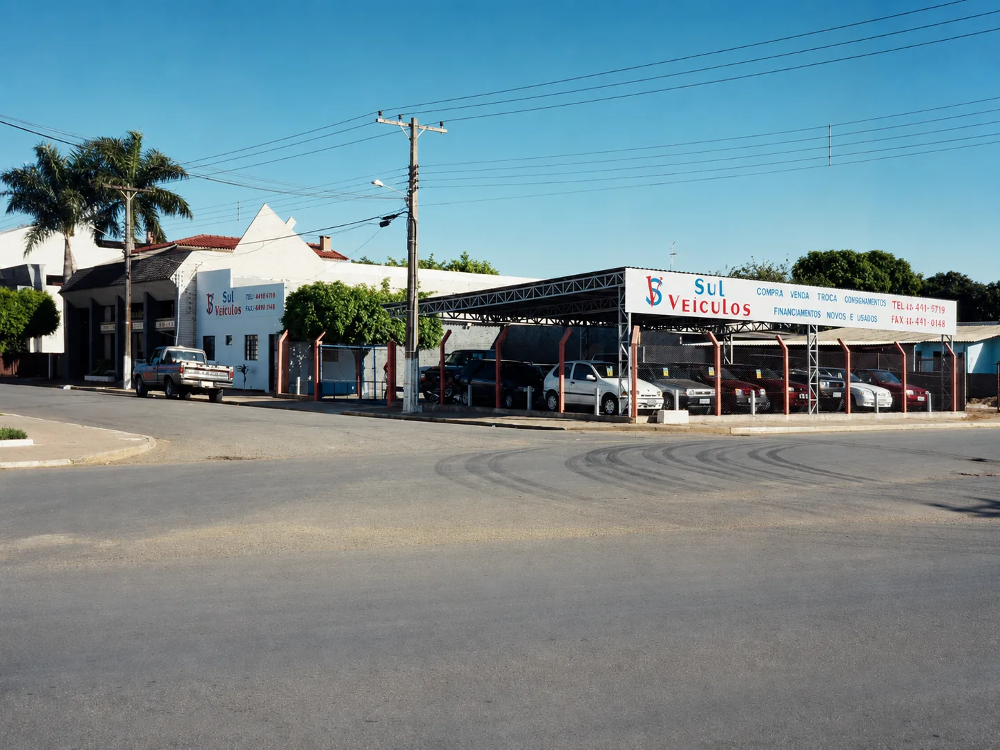
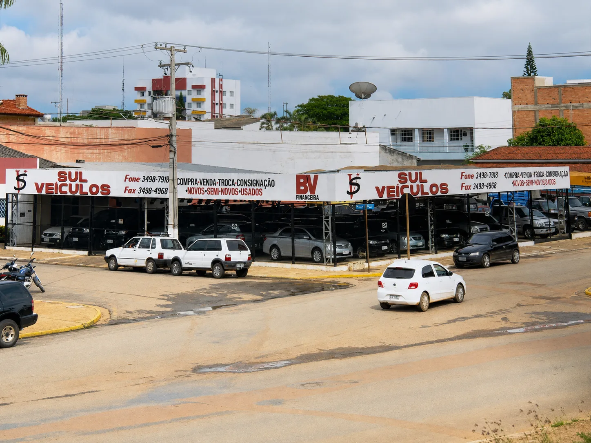
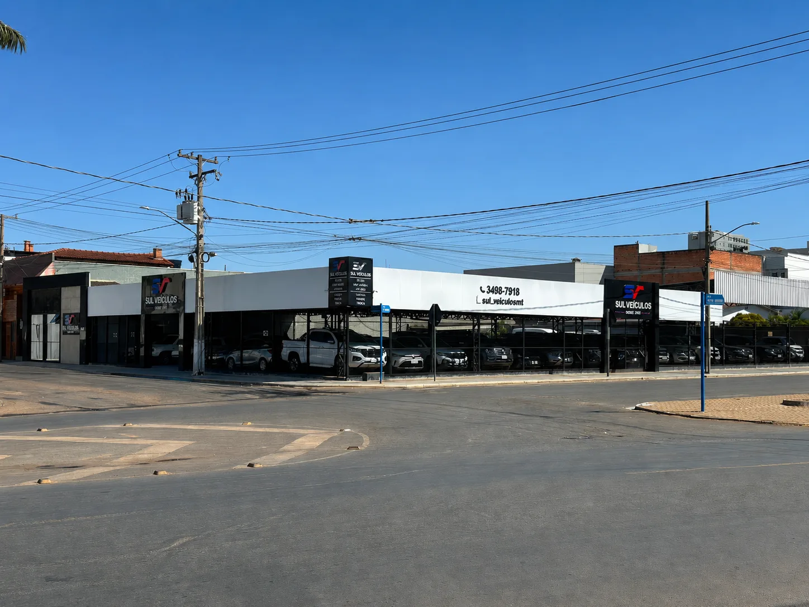
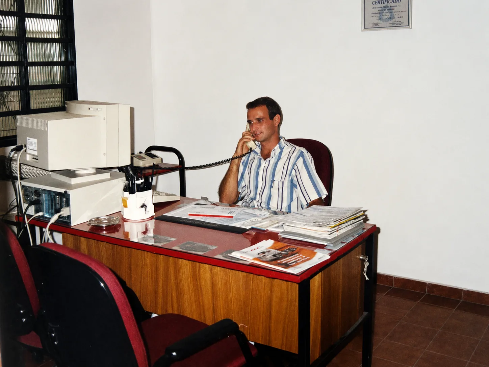
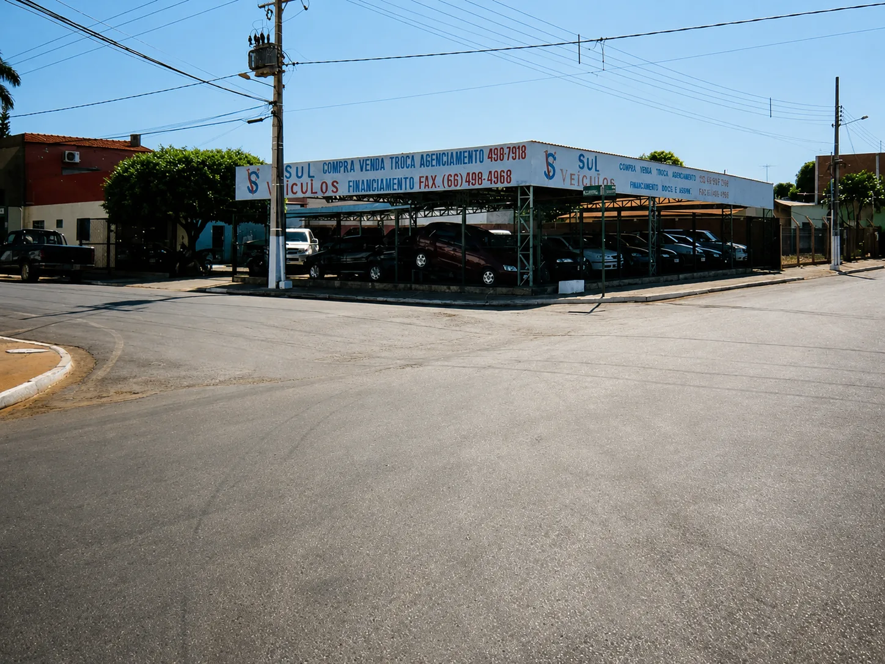
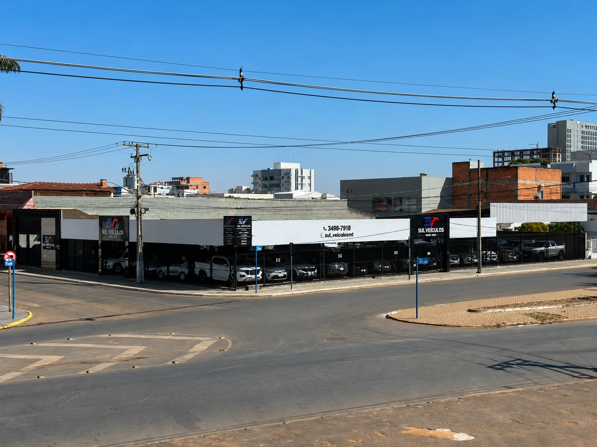

2002
2012
HojeA história começou antes de 2002
Mais de duas décadas expandindo a estrutura, sem nunca abrir mão do jeito de atender.
1997

O início, antes da loja
Natural do interior do Rio Grande do Sul, Helio Segatto trouxe consigo os valores típicos de sua terra: trabalho, honestidade, simplicidade e respeito pelas pessoas. Foi justamente essa origem que inspirou o nome da empresa. Ao chegar ao Mato Grosso em busca de novas oportunidades, carregava o orgulho de suas raízes e o sonho de construir uma história por meio do trabalho.
Sua trajetória no mercado automotivo teve início em 1992, quando começou a atuar na compra e venda de veículos, construindo sua reputação com dedicação, transparência e compromisso em cada negociação.
2002
Nasce a Sul Veículos
Em 2002, a experiência acumulada por Helio deu origem à Sul Veículos, empresa que desde então vem conquistando a confiança de centenas de famílias, oferecendo veículos com procedência, atendimento próximo e negociações pautadas pela seriedade.
2006

O pátio cresce junto com a confiança
Com o passar dos anos, o pátio coberto ganhou mais espaço e a loja passou a oferecer financiamento facilitado direto no balcão, ampliando o atendimento a quem buscava o primeiro carro ou trocava o usado por um seminovo.
2012
Nova estrutura, o mesmo compromisso
A estrutura ganhou nova cara, mais área coberta e um mix maior de veículos novos, seminovos e usados, sempre no mesmo endereço, já reconhecido pela cidade como sinônimo de carro bom e negociação séria.
Hoje

A Sul Veículos que você conhece
Hoje a Sul Veículos ocupa um pátio amplo e moderno em Primavera do Leste, mantendo viva a mesma essência de mais de duas décadas atrás: negociar com honestidade e tratar cada cliente como parte da família Sul Veículos.
Mais do que vender automóveis, a Sul Veículos acredita em construir relacionamentos duradouros e fazer parte de momentos importantes na vida de cada cliente.